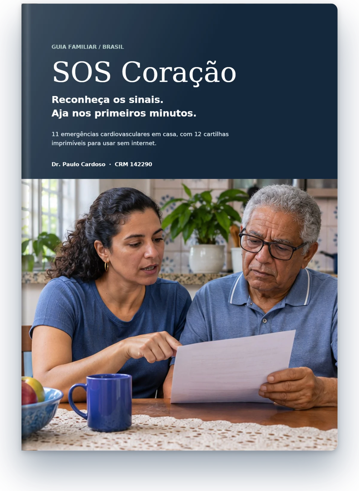
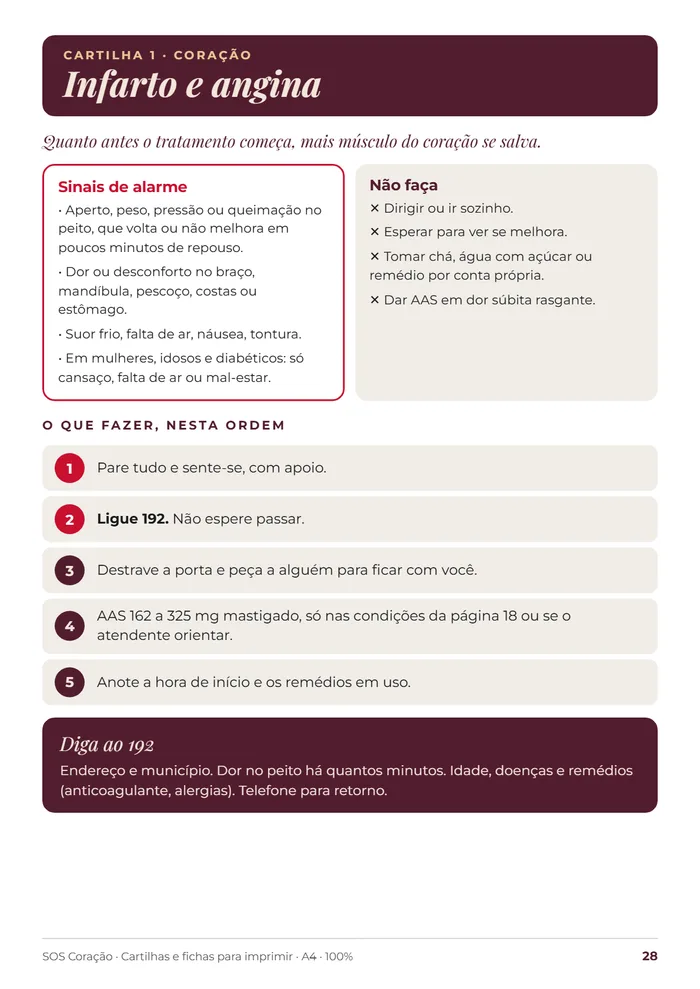
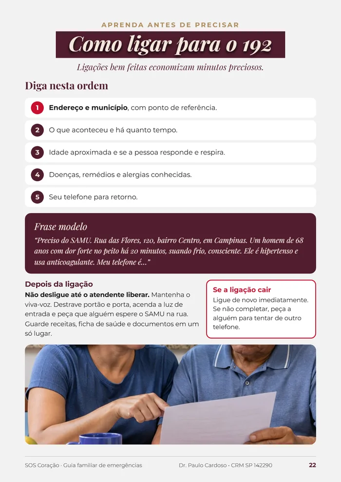
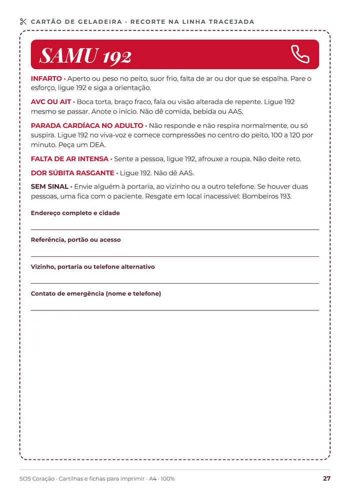
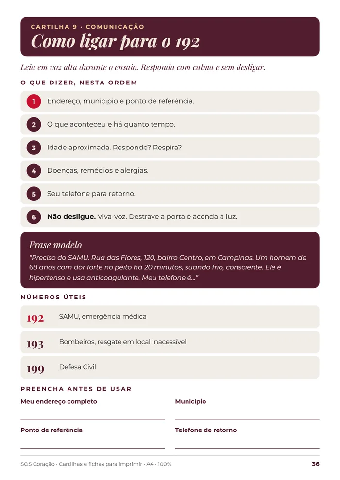
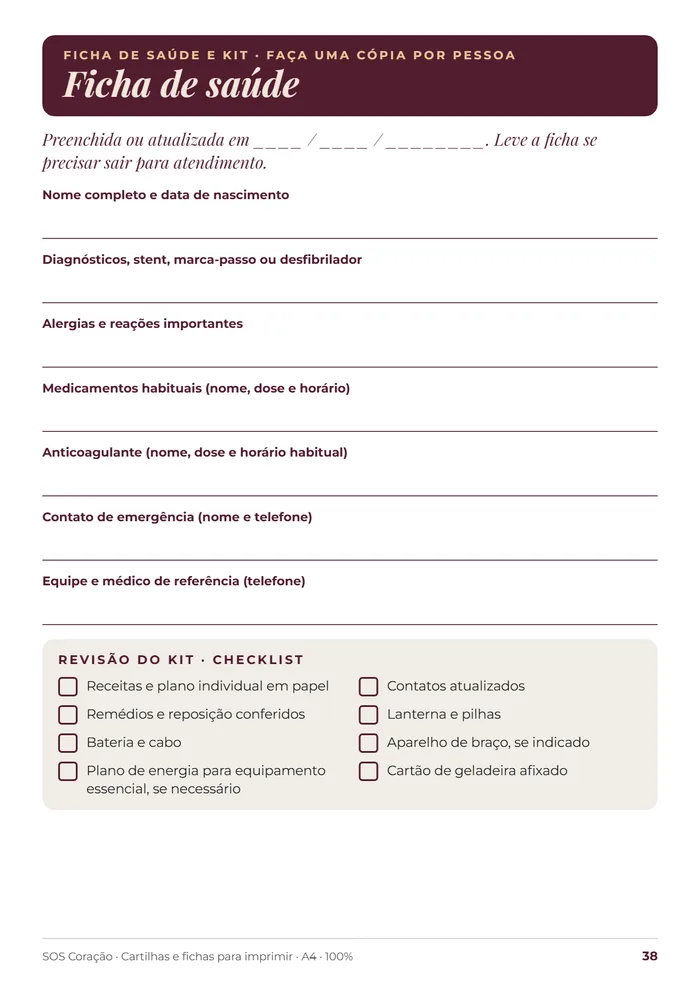
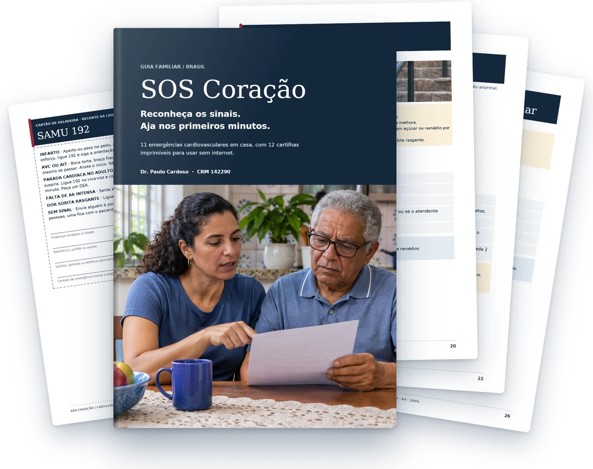

Reconhecer
Os sinais de alerta do infarto, do AVC e da parada cardíaca, em linguagem simples, inclusive os que enganam em mulheres, idosos e diabéticos.
Criado por um cardiologista, com 11 emergências + 12 cartilhas para imprimir, para reconhecer os sinais e agir com segurança nos primeiros minutos.
Quero o guia agoraAcesso imediato no seu e-mail · Garantia de 7 dias


Talvez você já tenha pensado nisso
Um pai que reclama de aperto no peito. Uma mãe com a boca torta de repente. Alguém da família que desmaia na sala.
Numa emergência do coração ou do cérebro, o medo toma conta e a dúvida custa tempo.
E ninguém ensinou a família o que fazer em cada situação.
Alguma dessas frases já passou pela sua cabeça?
“Será que é infarto ou só um mal-estar?”
“Eu levo de carro ou chamo a ambulância?”
“Não sei o que falar quando ligar para o 192.”
“E se acontecer quando não tiver mais ninguém em casa?”
“Passou rápido. Precisa ir ao hospital mesmo assim?”
“Dou um AAS ou pode piorar?”
“E se o celular estiver sem sinal?”
“Tenho medo de acontecer o mesmo que aconteceu com meu pai.”
Se você se reconheceu em pelo menos uma, este guia foi escrito para você e para a sua família.
Como o guia funciona
Os sinais de alerta do infarto, do AVC e da parada cardíaca, em linguagem simples, inclusive os que enganam em mulheres, idosos e diabéticos.
Quando ligar para o 192, o que dizer ao atendente (com frase pronta) e como preparar a casa até a ambulância chegar.
O que fazer, e o que não fazer, enquanto o socorro não chega. Tudo em cartilhas que qualquer pessoa da casa consegue seguir.
O que você encontra dentro
Com base no Ministério da Saúde, American Heart Association, Cruz Vermelha, Defesa Civil e OMS.

Junto com o guia, você recebe

As 6 situações mais graves em uma folha, com espaço para o endereço da casa e o contato de emergência.
Uma para cada emergência: sinais de alarme, o que não fazer e os passos numerados. Funciona sem internet.

O que o atendente vai perguntar e uma frase modelo para você falar sem travar.

Quem faz o quê quando o telefone falha, a ficha para entregar à equipe do SAMU e o checklist do kit de casa.
Valor total: R$ 522,00
No total, isso tudo deveria custar mais de R$ 522,00. Mas hoje você leva o guia completo por apenas:

12x R$ 6,89
ou R$ 67,00 à vista no Pix
Pagamento único · o material fica com você
Menos do que uma pizza, para deixar a casa inteira preparada.
Quero o meu guia agoraPagamento seguro · Pix ou cartão · Acesso imediato
Você conclui a compra por Pix ou cartão.
O acesso chega no seu e-mail em poucos minutos.
Você imprime as cartilhas e deixa à mão. É seu para sempre.
Leia o guia e imprima as cartilhas. Se achar que não valeu, peça o reembolso em até 7 dias e você recebe 100% do valor de volta. Sem perguntas.
Me responda somente a verdade
Emergências do coração não avisam. E nos primeiros minutos não dá tempo de pesquisar no celular.
O que você deixa preparado hoje é o que a sua família vai ter em mãos na hora que mais importa.
“Ele sabe ouvir, faz as perguntas certas no momento certo e passa muita tranquilidade e calma nas palavras.”
Wellison L. D. · paciente
“Escutou com paciência e atenção minhas queixas, foi claro nas explicações e me deixou seguro quanto às possibilidades de tratamento.”
João Felipe S. · paciente
“O dr. Paulo é uma pessoa muito agradável, e que explica tudo de maneira detalhada.”
Suely M. G. · paciente
Avaliações públicas das consultas com o Dr. Paulo no Google.
Não. Ele ensina a reconhecer os sinais e a agir até o socorro chegar. Numa emergência, ligue sempre para o 192 (SAMU).
Por e-mail, logo após a confirmação do pagamento. É um PDF que você lê no celular, no computador ou imprime.
Sim. As páginas 27 a 38 foram feitas para imprimir em A4: o cartão vai na geladeira e as cartilhas ficam com quem convive com a pessoa em risco.
Sim. A linguagem é simples e foi pensada para qualquer pessoa da família.
Pode. Muita gente compra para os pais ou avós e imprime as cartilhas para a casa deles.
Você tem 7 dias de garantia. Peça o reembolso e recebe 100% do valor de volta.
Sim. O Dr. Paulo atende presencialmente em São José dos Campos e online, por teleconsulta. Fale com a equipe no WhatsApp.